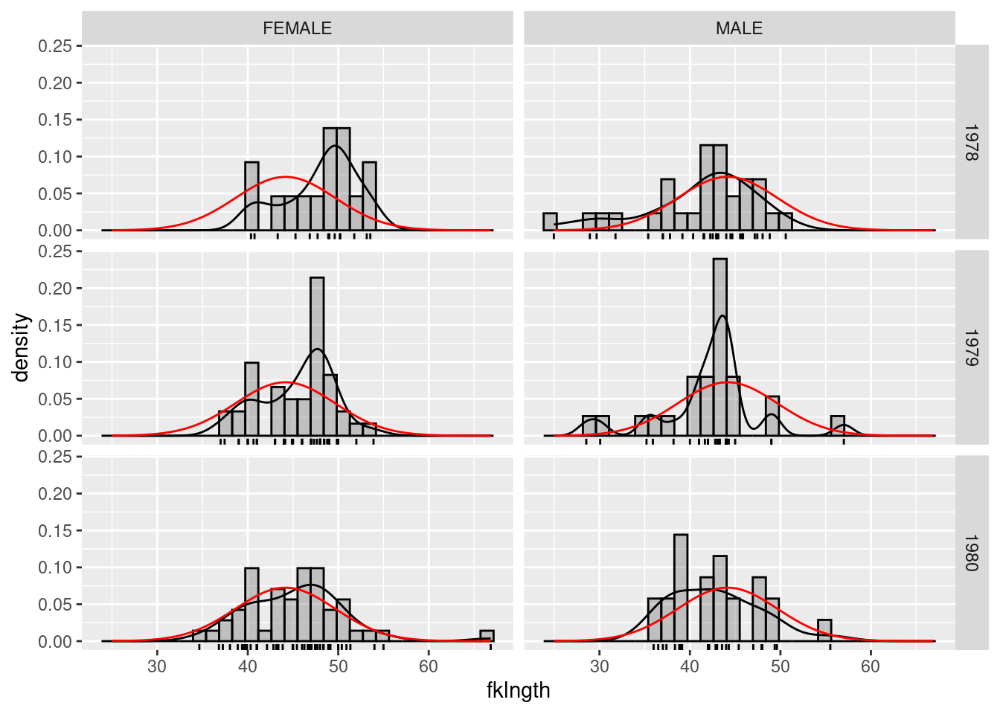
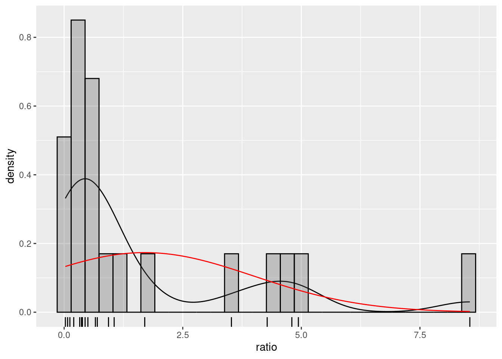

load("data/ErablesGatineau.Rdata")1 Introduction to R
After completing this laboratory exercise, you should be able to:
- Open R data files
- Import rectangular data sets
- Export R data to text files
- Verify that data were imported correctly
- Examine the distribution of a variable
- Examine visually and test for normality of a variable
- Calculate descriptive statistics for a variable
- Transform data
1.1 Packages and data needed for the lab
This labs needs the following:
- R packages:
- ggplot2
- data files
- ErablesGatineau.csv
- sturgeon.csv
1.2 Importing and exporting data
There are multiple format to save data. The 2 most used formats with R are .csv and .Rdata.
-
.csvfiles are used to store data in a simple format and are editable using any text editor (e.g. Word, Writer, atom, …) and spreadsheets (e.g. MS Excel, LO Calc). They can be read using the functionread.csv()and created in R withwrite.csv(). -
.Rdatafiles are used to store not only data but any R object, however, those files can only be used in R. They are created using thesave()function and read using theload()function.
Data for exercises and labs are provides in .csv.
1.2.1 Working directory
Potentially the most frequent error when starting with R is link to loading data or reading data from an external file in R.
A typical error message is:
Error in file(file, "rt") : cannot open the connection
In addition: Warning message:
In file(file, "rt") :
cannot open file 'ou_est_mon_fichier.csv': No such file or directoryThis type of error simply means that R cannot find the file you specified. By default, when R starts, a folder is defined as the base folder for R. This is the working directory. R by default will save any files in this folder and will start looking for files in this folder. So you need to specify to R where to look for files and where to save your files. This can be done in 3 different ways:
-
file.choose(). (not recommended, because not reproducible). This function will open a dialog box allowing you to click on the file you want. This is not recommended and can be long because you will have to do it absolutely every time you use R. - specify the complete path in the function. For example
read.csv("/home/julien/Documents/cours/BIO4558/labo/data/monfichier.csv"). This is longer to type the first time and a bit tricky to get the correct path but after you can run the line of code and it works every time without trying to remember were you saved that damned file. However, this is specific to your own computer and would not work elsewhere. - specify a working directory with
setwd(). This simplify tells R where to look for files and where to save files. (This is automatically done when using .Rmd files). Just set the working directory to where you want and after that all path will be relative to this working directory. The big advantage is that if you keep a similar folder structure for you R project it will be compatible and reproducible across all computer and OS
To know which folder is the workind directory simply type getwd()
When opening Rstudio by double-clicking on a file, it will automatically set the working irectory to the folder where this file is located. This can be super handy.
For all labs, I strongly recommend you to make a folder where you will save all your R scripts and data and use it as your working directory in R. For better organisation I suggest to save your data in a subfolder named data All R code for data loading in the manual is based on that structure. This is why dat loading or saving code look likedata/my_file.xxx`. If you follow it also all code for data loading can be simply copy-pasted and should work.
1.2.2 Opening a .Rdata file
You can double-click on the file and R/Rstudio should open. Alternatively, you can use load() function and specify the names (and path) of the file. For example to load the data ErablesGatineau.Rdata in R which is located in the folder data in the working directory you can use:
1.2.3 Open a .csv file
To import data saved in a .csv file, you need to use the read.csv() function. For example, to create a R object named erables which contain the data from the file ErablesGatineau.csv, you need to use:
erables <- read.csv("data/ErablesGatineau.csv")Beware of the coma. If you are working in adifferent language (other than english), be careful because the decimal symbol might ot be the same. By default R use the point for the decimal sign. If the dat use the coma for the decimal then R would not be able to read the file correctly. In this case you can use read.csv2() or read.data() which should solve the problem.
To verify that the data were read and loaded properly, you can list all objects in memory with the ls() function, or get a more detailed description with ls.str():
ls()[1] "erables"str(erables)'data.frame': 100 obs. of 3 variables:
$ station: chr "A" "A" "A" "A" ...
$ diam : num 22.4 36.1 44.4 24.6 17.7 ...
$ biom : num 732 1171 673 1552 504 ...R confirms that the object erables. erables is a data.frame that contains 100 observations (lines) of 3 variables (columns) : station , a variable of type Factor with 2 levels, and diam and biom that are 2 numeric variables.
1.2.4 Entering data in R
R is not the ideal environment to input data. It is possible, but the syntax is heavy and makes most people upset. Use your preferred worksheet program instead. It will be more efficient and less frustrating.
1.2.5 Cleaning up / correcting data
Another operation that can be frustrating in R. Our advice: unless you want to keep track of all corrections made (so that you can go back to the original data), do not change data in R. Return to the original data file (in a worksheet or database), correct the data there, and then reimport into R. It is simple to resubmit the few lines of code to reimport data. Doing things this way will leave you with a single version of your data file that has all corrections, and the code that allows you to repeat the analysis exactly.
1.2.6 Exporting data from R
You have 2 options: export data in .csv or in .Rdata
To export in .Rdata use the function save() to export in .csv use write.csv()
For example, to save teh object mydata in a file wonderful_data.csvthat will be saved in your working directory you can type:
write.csv(mydata, file = "wonderful_data.csv", row.names = FALSE)1.3 Preliminary examination of data
The first step of data analysis is to examine the data at hand. This examination will tell you if the data were correctly imported, whether the numbers are credible, whether all data came in, etc. This initial data examination often will allow you to detect unlikely observations, possibly due to errors at the data entry stage. Finally, the initial plotting of the data will allow you to visualize the major trends that will be confirmed later by your statistical analysis.
The file sturgeon.csv contains data on sturgeons from the Saskatchewan River. These data were collected to examine how sturgeon size varies among sexes ( sex ), sites ( location ), and years( year ).
- Load the data from
sturgeon.csvin a R object namedsturgeon. - use the function
str()to check that the data was loaded and read correctly.
'data.frame': 186 obs. of 9 variables:
$ fklngth : num 37 50.2 28.9 50.2 45.6 ...
$ totlngth: num 40.7 54.1 31.3 53.1 49.5 ...
$ drlngth : num 23.6 31.5 17.3 32.3 32.1 ...
$ rdwght : num 15.95 NA 6.49 NA 29.92 ...
$ age : int 11 24 7 23 20 23 20 7 23 19 ...
$ girth : num 40.5 53.5 31 52.5 50 54.2 48 28.5 44 39 ...
$ sex : chr "MALE" "FEMALE" "MALE" "FEMALE" ...
$ location: chr "THE_PAS" "THE_PAS" "THE_PAS" "THE_PAS" ...
$ year : int 1978 1978 1978 1978 1978 1978 1978 1978 1978 1978 ...1.3.1 Summary statistics
To get summary statistics on the contents of the data frame sturgeon, type the command:
summary(sturgeon) fklngth totlngth drlngth rdwght
Min. :24.96 Min. :28.15 Min. :14.33 Min. : 4.73
1st Qu.:41.00 1st Qu.:43.66 1st Qu.:25.00 1st Qu.:18.09
Median :44.06 Median :47.32 Median :27.00 Median :23.10
Mean :44.15 Mean :47.45 Mean :27.29 Mean :24.87
3rd Qu.:48.00 3rd Qu.:51.97 3rd Qu.:29.72 3rd Qu.:30.27
Max. :66.85 Max. :72.05 Max. :41.93 Max. :93.72
NA's :85 NA's :13 NA's :4
age girth sex location
Min. : 7.00 Min. :11.50 Length:186 Length:186
1st Qu.:17.00 1st Qu.:40.00 Class :character Class :character
Median :20.00 Median :44.00 Mode :character Mode :character
Mean :20.24 Mean :44.33
3rd Qu.:23.50 3rd Qu.:48.80
Max. :55.00 Max. :73.70
NA's :11 NA's :85
year
Min. :1978
1st Qu.:1979
Median :1979
Mean :1979
3rd Qu.:1980
Max. :1980
For each variable, R lists:
- the minimum
- the maximum
- the median that is the \(50^{th}\) percentile, here the \(93^{rd}\) value of the 186 observations ordered in ascending order
- values at the first (25%) and third quartile (75%)
- the number of missing values in the column.
Note that several variables have missing values (NA). Only the variables fklngth (fork length), sex , location , and year have 186 observations.
Beware of missing values
Several R functions are sensitive to missing values and you will frequently have to do your analyses on data subsets without missing data, or by using optional parameters in various commands. We will get back to this, but you should always pay attention and take note of missing data when you do analyses.
1.3.2 Histogram, empirical probability density, boxplot, and visual assessment of normality
Let’s look more closely at the distribution of fklngth. The command hist() will create a histogram. For the histogram of fklngth in the sturgeon data frame, type the command:
hist(sturgeon$fklngth)
The data appear to be approximately normal. This is good to know.
Note that this syntax is a bit heavy as you need to prefix variable names by the data frame name sturgeon$. You can lighten the syntax by making the variables directly accessible by commands by typing the command attach(). However, I strongly recommend not to use it because it can lead to many problems hard to detect compare to the little benfit is provides
This histogram (Fig. @ref(fig:hist-stur)) is a very classical representation of the distribution. Histograms are not perfect however because their shape partly depends on the number of bins used, more so for small samples. One can do better, especially if you want to visually compare the observed distribution to a normal distribution. But you need to come up with a bit of extra R code based on the ggplot2 📦.
## load ggplot2 if needed
library(ggplot2)
## use "sturgeon" dataframe to make plot called mygraph
# and define x axis as representing fklngth
mygraph <- ggplot(data = sturgeon, aes(x = fklngth))
## add data to the mygraph ggplot
mygraph <- mygraph +
## add semitransparent histogram
geom_histogram(aes(y = ..density..),
bins = 30, color = "black", alpha = 0.3
) +
## add density smooth
geom_density() +
## add observations positions or rug bars
geom_rug() +
## add Gaussian curve adjusted to the data with mean and sd from fklngth
stat_function(
fun = dnorm,
args = list(
mean = mean(sturgeon$fklngth),
sd = sd(sturgeon$fklngth)
),
color = "red"
)
## display graph
mygraph
Each observation is represented by a short vertical bar below the x- axis (rug). The red line is the normal distribution with the same mean and standard deviation as the data. The other line is the empirical distribution, smoothed from the observations.
The ggplot object you just created (mygraph) can be further manipulated. For example, you can plot the distribution of fklngth per sex and year groups simply by adding a facet_grid() statement:
mygraph + facet_grid(year ~ sex)
Each panel contains the data distribution for one sex that year, and the recurring red curve is the normal distribution for the entire data set. It can serve as a reference to help visually evaluate differences among panels.
Another way to visually assess normality of data is the QQ plot that is obtained by the pair of commands qqnorm() and qqline().
Perfectly normal data would follow the straight diagonal line. Here there are deviations in the tails of the distribution and a bit to the right of the center. Compare this representation to the two preceding graphs. You will probably agree that it is easier to visualize how data deviate from normality by looking at a histogram of an empirical probability density than by looking at the QQ plots. However, QQ plots are often automatically produced by various statistical routines and you should be able to interpret them. In addition, one can easily run a formal test of normality in R with the command shapiro.test() that computes a statistic (W) that measures how tightly data fall around the straight diagonal line of the QQ plot. If data fall perfectly on the line, then W = 1. If W is much less than 1, then data are not normal.
For the fklngth data:
shapiro.test(sturgeon$fklngth)
Shapiro-Wilk normality test
data: sturgeon$fklngth
W = 0.97225, p-value = 0.0009285W is close to 1, but far enough to indicate a statistically significant deviation from normality.
Visual examination of very large data sets is often made difficult by the superposition of data points. Boxplots are an interesting alternative. The command boxplot(fklngth~sex, notch=TRUE) produces a boxplot of fklngth for each sex , and adds whiskers.
boxplot(fklngth ~ sex, data = sturgeon, notch = TRUE)
The slightly thicker line inside the box of figure @ref(fig:boxplot-stur) indicates the median. The width of the notch is proportional to the uncertainty around the median estimate. One can visually assess the approximate statistical significance of differences among medians by looking at the overlap of the notches (here there is no overlap and one could tentatively conclude that the median female size is larger than the median male size). Boxes extend from the first to third quartile (the 25th to 75th percentile if you prefer). Bars (whiskers) extend above and below the boxes from the minimum to the maximum observed value or, if there are extreme values, from the smallest to the largest observed value within 1.5x the interquartile range from the median. Observations exceeding the limits of the whiskers (hence further away from the median than 1.5x the interquartile range, the range between the 25th and 75th percentile) are plotted as circles. These are outliers, possibly aberrant data.
1.3.3 Scatterplots
In addition to histograms and other univariate plots, it is often informative to examine scatter plots. The command plot(y~x) produces a scatter plot of y on the vertical axis (the ordinate) vs x on the horizontal axis (abscissa).
Exercise
Create a scatterplot of fklngth vs age using the plot() command.
You should obtain:
plot(fklngth ~ age, data = sturgeon)
R has a function to create all pairwise scatterplots rapidly called pairs() . One of pairs() options is the addition of a lowess trace on each plot to that is a smoothed trend in the data. To get the plot matrix with the lowess smooth for all variables in the sturgeon data frame, execute the command pairs(sturgeon, panel=panel.smooth). Howeber given the large number of variable in sturgeon we can limit the plot to the first 6 columns in the data.
pairs(sturgeon[, 1:6], panel = panel.smooth)1.4 Creating data subsets
You will frequently want to do analyses on some subset of your data. The command subset() is what you need to isolate cases meeting some criteria. For example, to create a subset of the sturgeon data frame that contains only females caught in 1978, you could write:
sturgeon_female_1978 <- subset(sturgeon, sex == "FEMALE" & year == "1978")
sturgeon_female_1978 fklngth totlngth drlngth rdwght age girth sex location year
2 50.19685 54.13386 31.49606 NA 24 53.5 FEMALE THE_PAS 1978
4 50.19685 53.14961 32.28346 NA 23 52.5 FEMALE THE_PAS 1978
6 49.60630 53.93701 31.10236 35.86 23 54.2 FEMALE THE_PAS 1978
7 47.71654 51.37795 33.97638 33.88 20 48.0 FEMALE THE_PAS 1978
15 48.89764 53.93701 29.92126 35.86 23 52.5 FEMALE THE_PAS 1978
105 46.85039 NA 28.34646 23.90 24 NA FEMALE CUMBERLAND 1978
106 40.74803 NA 24.80315 17.50 18 NA FEMALE CUMBERLAND 1978
107 40.35433 NA 25.59055 20.90 21 NA FEMALE CUMBERLAND 1978
109 43.30709 NA 27.95276 24.10 19 NA FEMALE CUMBERLAND 1978
113 53.54331 NA 33.85827 48.90 20 NA FEMALE CUMBERLAND 1978
114 51.77165 NA 31.49606 35.30 26 NA FEMALE CUMBERLAND 1978
116 45.27559 NA 26.57480 23.70 24 NA FEMALE CUMBERLAND 1978
118 53.14961 NA 32.67717 45.30 25 NA FEMALE CUMBERLAND 1978
119 50.19685 NA 32.08661 33.90 26 NA FEMALE CUMBERLAND 1978
123 49.01575 NA 29.13386 37.50 22 NA FEMALE CUMBERLAND 1978When using criteria to select cases, be careful of the == syntax to mean equal to. In this context, if you use a single =, you will not get what you want. The following table lists the most common criteria to create expressions and their R syntax.
| Operator | Explanation | Operator | Explanation |
|---|---|---|---|
| == | Equal to | != | Not equal to |
| > | Larger than | < | Lower than |
| >= | Larger than or equal to | <= | Lower than or equal to |
| & | And (vectorized) | | | Or (vectorized) |
| && | And (control) | || | Or (control) |
| ! | Not |
Exercise
1.5 Data transformation
You will frequently transform raw data to better satisfy assumptions of statistical tests. R will allow you to do that easily. The most used functions are probably:
You can use these functions directly within commands, create vector variables, or add columns in data frames. To do a plot of the decimal log of fklngth vs age, you can simply use the log10() function within the plot command:
To create a vector variable, an orphan variable if you wish, one that is not part of a data frame, called lfklngth and corresponding too the decimal log of fklngth, simply enter:
logfklngth <- log10(sturgeon$fklngth)If you want this new variable to be added to a data frame, then you must prefix the variable name by the data frame name and the $ symbol. For example to add the variable lfkl containing the decimal log of fklngth to the sturgeon data frame, enter:
sturgeon$lfkl <- log10(sturgeon$fklngth)lfkl will be added to the data frame sturgeon for the R session. Do not forget to save the modified data frame if you want to keep the modified version. Or better, save you Rscript and do not forget to run the line of code again next time you need it.
For conditional transformations, you can use the function ifelse(). For example, to create a new variable called dummy with a value of 1 for males and 0 for females, you can use:
sturgeon$dummy <- ifelse(sturgeon$sex == "MALE", 1, 0)1.6 Exercice
The file salmonella.csv contains numerical values for the variable called ratio for two environments (milieu: IN VITRO or IN VIVO) and for 3 strains (souche). Examine the ratio variable and make a graph to visually assess normality for the wild (SAUVAGE) strain.
Solution
## load the data
salmonella <- read.csv("data/salmonella.csv")
## create the base for the graph defining data and x
mygraph <- ggplot(subset(salmonella, souche == "SAUVAGE"), aes(x = ratio))
## add graph components
mygraph <- mygraph +
# density smooth
geom_density() +
# obersations positions
geom_rug() +
# histogram
geom_histogram(aes(y = ..density..),
bins = 30,
color = "black",
alpha = 0.3
) +
# ajusted Gaussian distribution
stat_function(
fun = dnorm,
args = list(
mean = mean(subset(salmonella, souche == "SAUVAGE")$ratio),
sd = sd(subset(salmonella, souche == "SAUVAGE")$ratio)
),
color = "red"
)
## plot the graph
mygraph